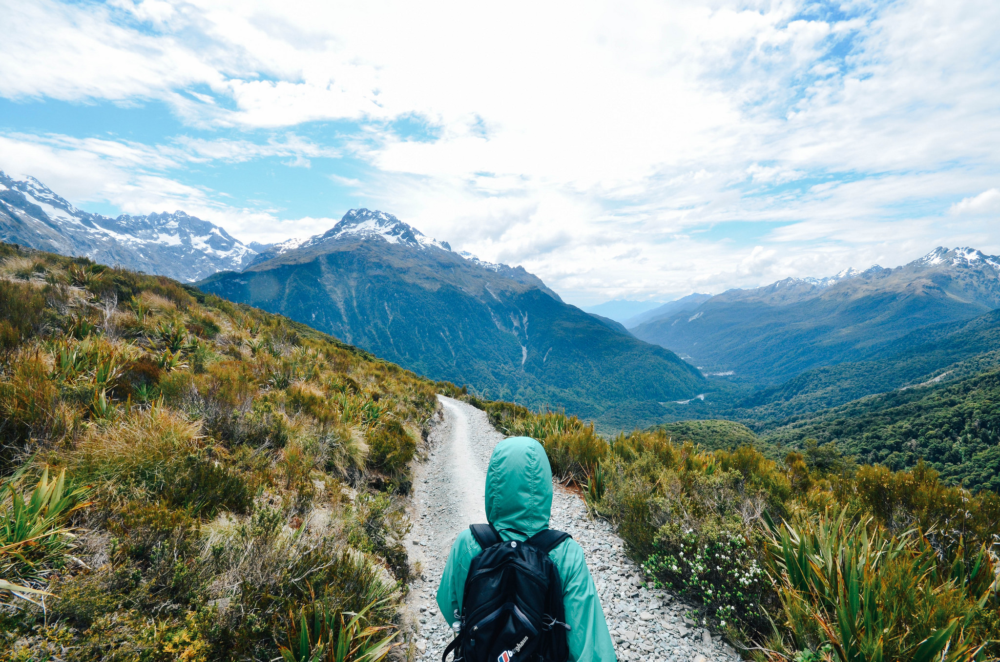
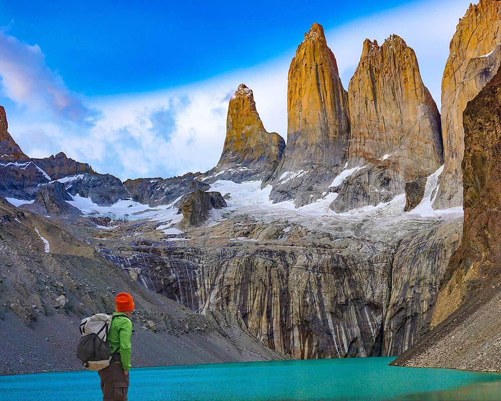
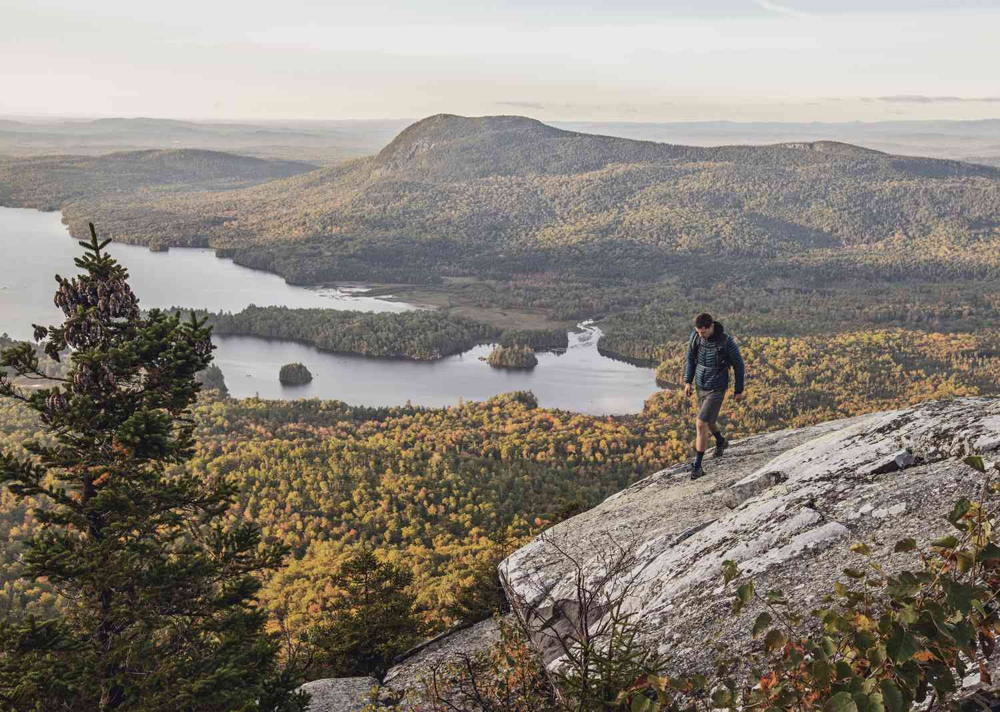
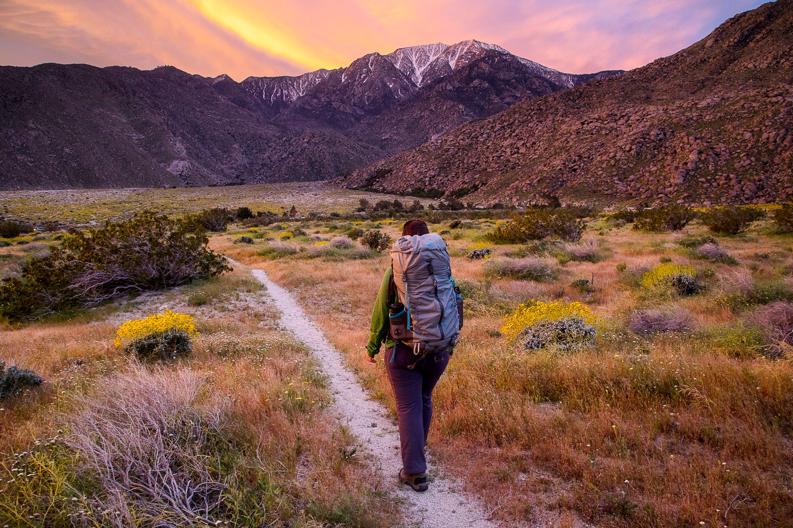
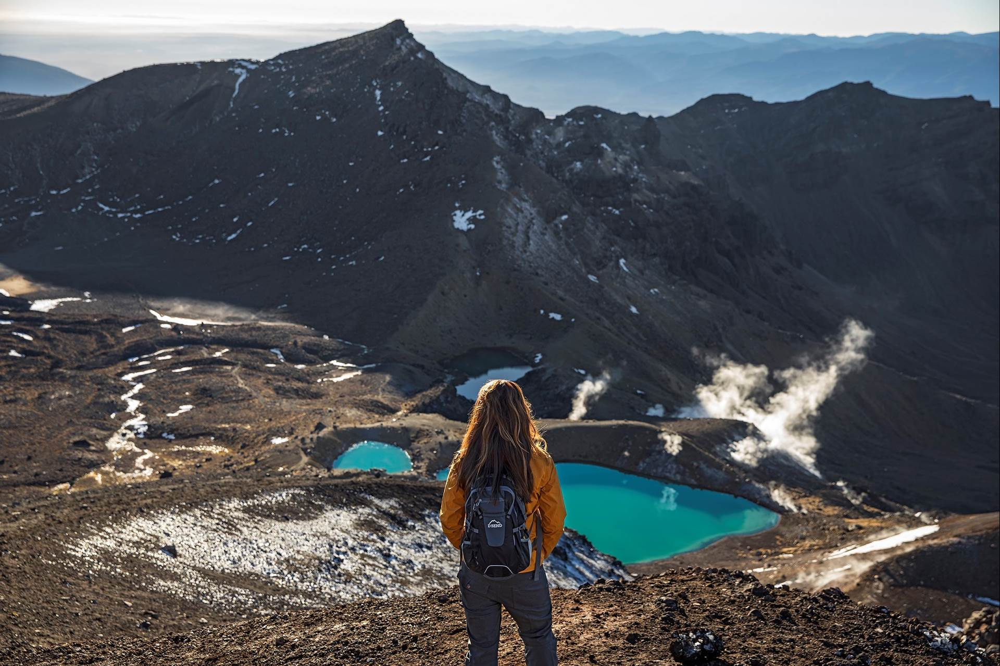
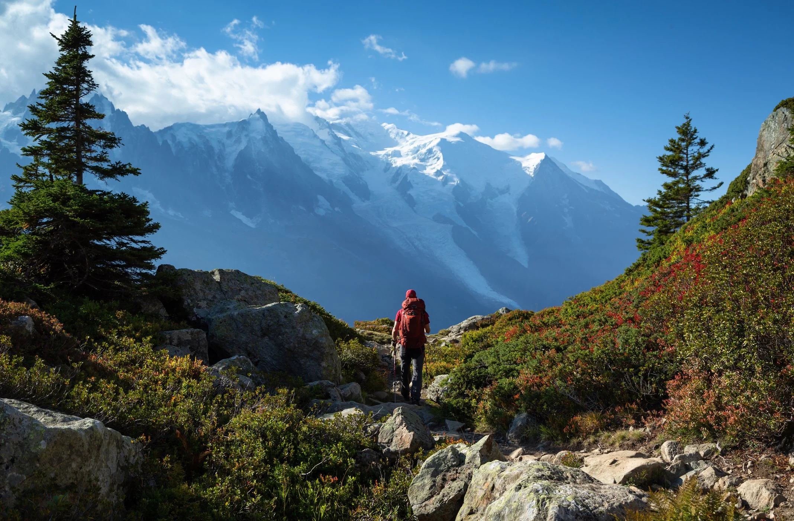
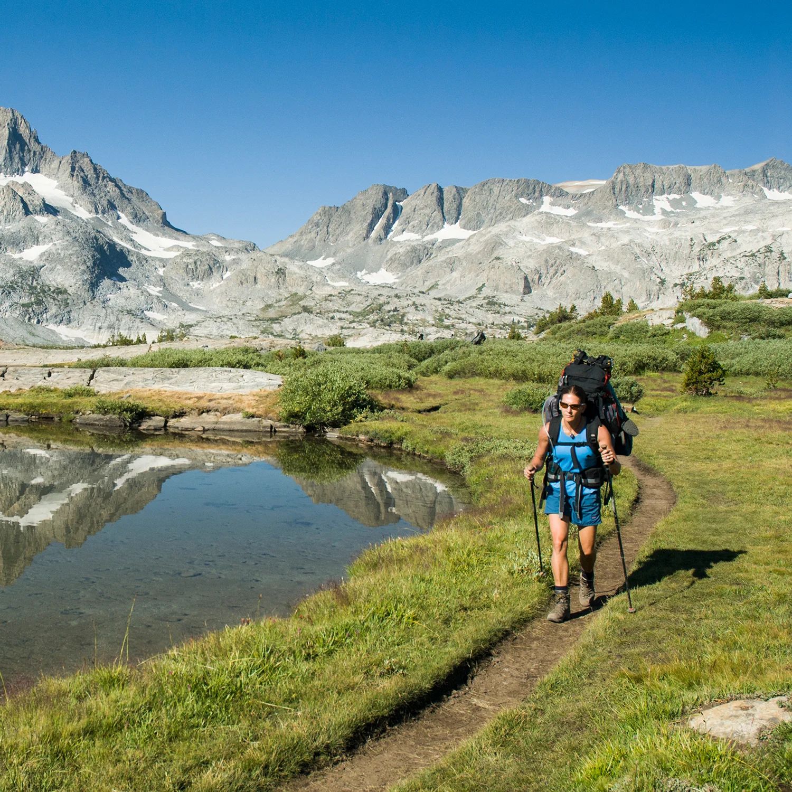
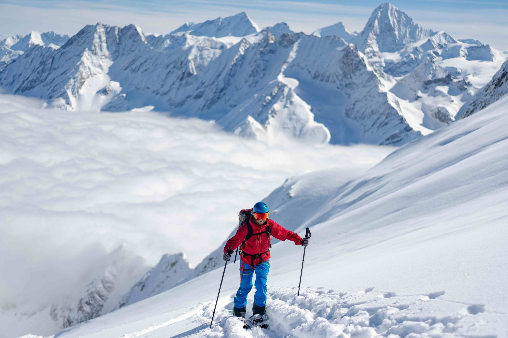
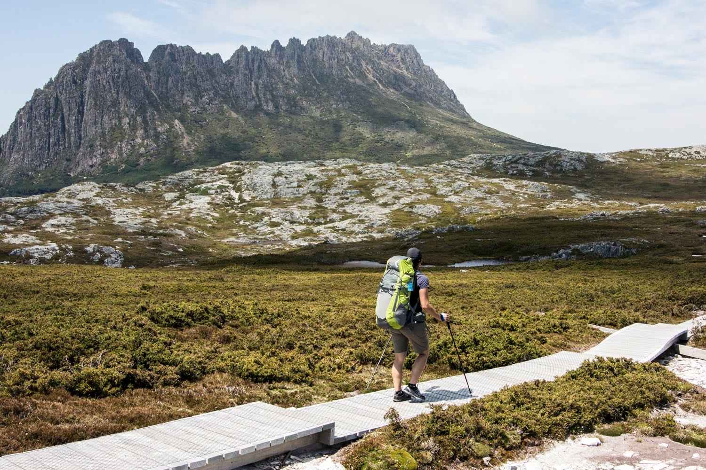

|
Inca Trail (Peru)
Trail Details:
- Distance: Approximately 26 miles (43 km).
- Duration: 4 days.
- Highlights: Ancient Incan ruins, Andean landscapes, Machu Picchu.
- Permits: Limited daily permits; book well in advance.
- Terrain: Diverse, including high mountain passes and lush cloud forests.
Weather Tips:
- Best during the dry season (May to September).
- Dress in layers, bring rain gear, and be prepared for cool nights.
Suitable Conditions:
- Humidity: Moderate.
- Wind Speed: Moderate; high winds can be challenging, especially at high altitudes.
- Temperature: Mild to warm during the day, cooler at night.
Not Suitable Conditions:
- Humidity: Extremely high humidity can make hiking uncomfortable.
- Wind Speed: Very high winds, especially at high altitudes, can pose safety risks.
- Temperature: Extremely cold temperatures at night without proper gear.
|
|  |
Milford Track (New Zealand)
Trail Details:
- Distance: 33.5 miles (53.5 km).
- Duration: 4 days.
- Highlights: Fiordland National Park, Sutherland Falls, Mackinnon Pass.
- Permits: Limited to manage trail impact; book in advance.
- Terrain: Varied, from rainforests to alpine meadows.
Weather Tips:
- Variable weather; can be rainy anytime.
- Waterproof gear is essential; be prepared for sudden changes.
Suitable Conditions:
- Humidity: Moderate to high.
- Wind Speed: Moderate; be prepared for gusty winds in alpine sections.
- Temperature: Cool to mild; can be cold in higher elevations.
Not Suitable Conditions:
- Humidity: Prolonged heavy rain and high humidity can lead to difficult trail conditions.
- Wind Speed: Extremely high winds, especially on exposed ridges.
- Temperature: Extremely cold temperatures without adequate clothing.
|
|  |
Torres del Paine Circuit (Chile)
Trail Details:
- Distance: Approximately 52 miles (84 km).
- Duration: 8-10 days.
- Highlights: Torres del Paine National Park, glaciers, diverse wildlife.
- Permits: Required; reservations recommended during peak season.
- Terrain: Challenging, with mountain passes and varied landscapes.
Weather Tips:
- Unpredictable weather; can be windy and cold year-round.
- Pack windproof and waterproof layers; check weather updates.
Suitable Conditions:
- Humidity: Moderate.
- Wind Speed: Moderate to high; windy conditions are common.
- Temperature: Cool to cold; drops significantly at higher altitudes.
Not Suitable Conditions:
- Humidity: Prolonged rain and high humidity can make the trail challenging.
- Wind Speed: Very high winds, especially in the mountainous areas.
- Temperature: Extreme cold, especially at high elevations, without proper insulation.
|
|  |
Appalachian Trail (USA)
Trail Details:
- Distance: Over 2,000 miles (3,500 km).
- Duration: 5-7 months.
- Highlights: Diverse ecosystems, scenic views.
- Permits: No single permit; regulations vary by section.
- Terrain: Varied, from mountains in the East to more gentle slopes in the North.
Weather Tips:
- Varies by region and season; plan accordingly.
- Check regional weather patterns, bring appropriate clothing.
Suitable Conditions:
- Humidity: Moderate.
- Wind Speed: Moderate; can vary by region.
- Temperature: Varies by region and season.
Not Suitable Conditions:
- Humidity: Extremely high humidity combined with high temperatures can be uncomfortable.
- Wind Speed: Very high winds, especially in exposed sections.
- Temperature: Extreme heat in summer or extreme cold in winter without proper gear.
|
|  |
Pacific Crest Trail (USA and Canada)
Trail Details:
- Distance: Approximately 2,650 miles (4,265 km).
- Duration: 4-6 months.
- Highlights: Sierra Nevada and Cascade mountain ranges, diverse ecosystems.
- Permits: Required for some sections; varies by region.
- Terrain: Diverse, ranging from deserts to alpine regions.
Weather Tips:
- Varies by region; snow can persist in high elevations.
- Check seasonal conditions, carry gear for cold and hot weather.
Suitable Conditions:
- Humidity: Generally low to moderate.
- Wind Speed: Moderate; higher winds possible in exposed areas.
- Temperature: Varies widely; be prepared for both hot and cold conditions.
Not Suitable Conditions:
- Humidity: Prolonged high humidity and hot temperatures can be challenging.
- Wind Speed: Very high winds in exposed sections.
- Temperature: Extreme heat in desert sections or extreme cold in higher elevations.
|
|  |
Tongariro Alpine Crossing (New Zealand)
Trail Details:
- Distance: 12 miles (19.4 km)
- Duration: 1 day
- Highlights: Volcanic craters, emerald lakes, unique geological features
- Permits: None required
- Terrain: Volcanic, with steep climbs and descents
Weather Tips:
- Changeable weather; be prepared for rapid changes
- Dress in layers, carry windproof and waterproof gear
Suitable Conditions:
- Humidity: Moderate
- Wind Speed: Moderate to high; especially on exposed ridges
- Temperature: Cool to cold; can be windy at higher elevations
Not Suitable Conditions:
- Humidity: Prolonged rain and high humidity can make the volcanic terrain slippery
- Wind Speed: Extremely high winds on exposed ridges
- Temperature: Extremely cold temperatures without proper clothing
|
|  |
Tour du Mont Blanc (France, Italy, Switzerland)
Trail Details:
- Distance: Approximately 105 miles (170 km).
- Duration: 7-11 days.
- Highlights: Mont Blanc massif, alpine meadows, charming villages.
- Permits: Generally not required for the entire route.
- Terrain: Varied, with mountainous and alpine sections.
Weather Tips:
- Best during the summer months (June to September).
- Bring layers, as temperatures can vary; be prepared for mountain weather changes.
Suitable Conditions:
- Humidity: Moderate.
- Wind Speed: Moderate; can be higher at higher altitudes.
- Temperature: Cool to mild temperatures in alpine environments.
Not Suitable Conditions:
- Humidity: Extended periods of rain and high humidity can make the trail challenging.
- Wind Speed: Very high winds in exposed alpine areas.
- Temperature: Extreme cold without proper insulation.
|
|  |
John Muir Trail (USA)
Trail Details:
- Distance: Approximately 211 miles (340 km).
- Duration: 2-4 weeks.
- Highlights: Sierra Nevada's high mountain passes, pristine lakes.
- Permits: Required; popular trail, plan in advance.
- Terrain: Mountainous, with high passes and alpine lakes.
Weather Tips:
- Generally good during the summer months; snow can persist in higher elevations.
- Carry sun protection, as well as layers for cooler temperatures at higher elevations.
Suitable Conditions:
- Humidity: Moderate.
- Wind Speed: Moderate; higher winds possible at higher elevations.
- Temperature: Varies by region and season; be prepared for alpine conditions.
Not Suitable Conditions:
- Humidity: Prolonged high humidity combined with hot temperatures can be uncomfortable.
- Wind Speed: Very high winds, especially at higher elevations.
- Temperature: Extreme heat in summer or extreme cold without proper gear.
|
|  |
Haute Route (France and Switzerland)
Trail Details:
- Distance: Around 112 miles (180 km).
- Duration: 10-14 days.
- Highlights: Mont Blanc and Matterhorn views, alpine landscapes.
- Permits: Generally not required for the entire route.
- Terrain: Varied, with alpine terrain and mountainous sections.
Weather Tips:
- Best during the summer months (July and August).
- Bring layers, be prepared for mountain weather, and check conditions for high passes.
Suitable Conditions:
- Humidity: Moderate.
- Wind Speed: Moderate to high; be prepared for mountain winds.
- Temperature: Cool to mild temperatures in alpine environments.
Not Suitable Conditions:
- Humidity: Extended periods of rain and high humidity can make alpine terrain challenging.
- Wind Speed: Very high winds in exposed mountainous areas.
- Temperature: Extreme cold without proper insulation.
|
|  |
Overland Track (Australia)
Trail Details:
- Distance: Approximately 40 miles (65 km).
- Duration: 5-6 days.
- Highlights: Cradle Mountain, rainforests, glacial lakes.
- Permits: Required; limited to manage impact.
- Terrain: Varied, with rainforest, alpine, and lake-side sections.
Weather Tips:
- Variable weather; can experience rain and cool temperatures.
- Waterproof gear is essential; pack layers for varying conditions.
Suitable Conditions:
- Humidity: Moderate.
- Wind Speed: Moderate; can be higher in open areas.
- Temperature: Cool to mild temperatures; can be cold in higher elevations.
Not Suitable Conditions:
- Humidity: Prolonged heavy rain and high humidity can make the trail challenging.
- Wind Speed: Very high winds, especially in open areas.
- Temperature: Extreme cold without proper gear, especially at higher elevations.
|